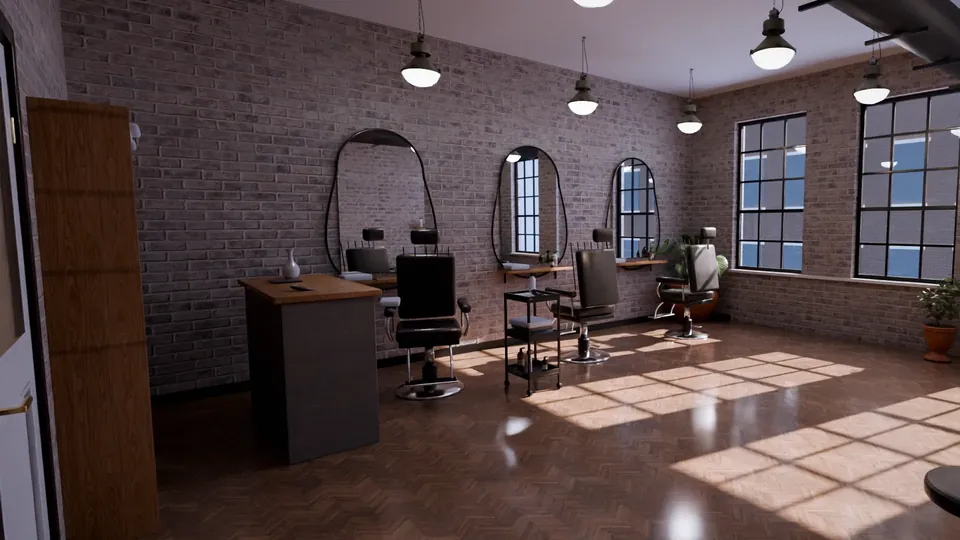

For the owner
How this sitefills your chairs.
In plain words: six ways it turns people searching on their phone into booked appointments, calls and walk-ins.
No numbers, no promises: what it does, and why that helps.

- 01
Bookings from the phone, day and night
'Book a time' sits on every screen, so the moment someone decides, they pick a service and a slot. People look for a cut or a nail appointment on their phone, often late at night.
- 02
Fewer empty gaps in the day
Your real free times, one tap away (Vagaro, Fresha, Booksy, Boulevard or a request form). A cancellation shows up as a free slot someone else can take.
- 03
People book a person
Each stylist, barber or artist with photos of their own work. People see a look they like and book the one who made it.
- 04
Fewer "how much?" DMs
Your menu and your prices in plain words, so people who are ready just book instead of messaging first.
- 05
Gift cards and repeat visits
Gift cards, packages and memberships, only if you sell them, sit on the menu; the booked text makes rebooking the next visit one tap.
- 06
Calls and walk-ins that find you
Call is on every screen. Hours, the map, the subway and your Google reviews: new people nearby find you and walk in.
Sample site made by Eshtyhar